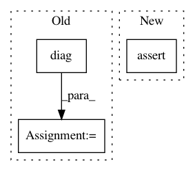

22edd92d06c201b1f40a656e5bbca84a5f483f2d,gpflow/kernels/misc.py,Coregion,K,#Coregion#Any#Any#,136
Before Change
X2 = X
else:
X2 = tf.cast(X2[:, 0], tf.int32)
B = tf.linalg.matmul(self.W, self.W, transpose_b=True) + tf.linalg.diag(self.kappa)
return tf.gather(tf.transpose(tf.gather(B, X2)), X)
def K_diag(self, X):
X = tf.cast(X[:, 0], tf.int32)
After Change
]
if X2 is not None:
shape_constraints.append((X2, [..., "M", 1]))
tf.debugging.assert_shapes(shape_constraints)
X = tf.cast(X[..., 0], tf.int32)
if X2 is None:
X2 = X
In pattern: SUPERPATTERN
Frequency: 4
Non-data size: 3
Instances
Project Name: GPflow/GPflow
Commit Name: 22edd92d06c201b1f40a656e5bbca84a5f483f2d
Time: 2020-02-14
Author: st--@users.noreply.github.com
File Name: gpflow/kernels/misc.py
Class Name: Coregion
Method Name: K
Project Name: freelunchtheorem/Conditional_Density_Estimation
Commit Name: 6fbef6a3631d94991ab02a9f7411e3b6fd954dfc
Time: 2019-01-12
Author: jonas.rothfuss@gmx.de
File Name: cde/density_estimator/NKDE.py
Class Name: NeighborKernelDensityEstimation
Method Name: _build_model
Project Name: epfl-lts2/pygsp
Commit Name: 00964b43ff0efa5b0568a7cb8c222bb9a60a2fcf
Time: 2019-03-05
Author: michael.defferrard@epfl.ch
File Name: pygsp/tests/test_graphs.py
Class Name: TestCase
Method Name: test_degree
Project Name: geomstats/geomstats
Commit Name: 8917a9d9c025613272544be55580d26f58dffe6a
Time: 2018-03-16
Author: ninamio78@gmail.com
File Name: geomstats/special_orthogonal_group.py
Class Name:
Method Name: closest_rotation_matrix